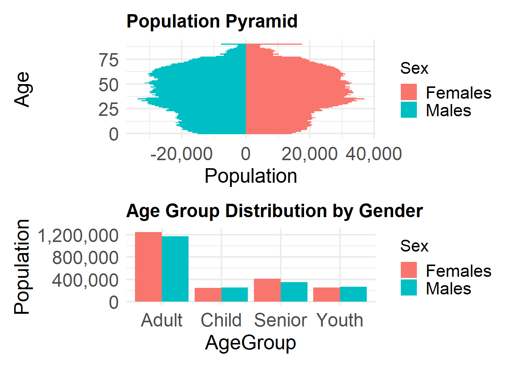
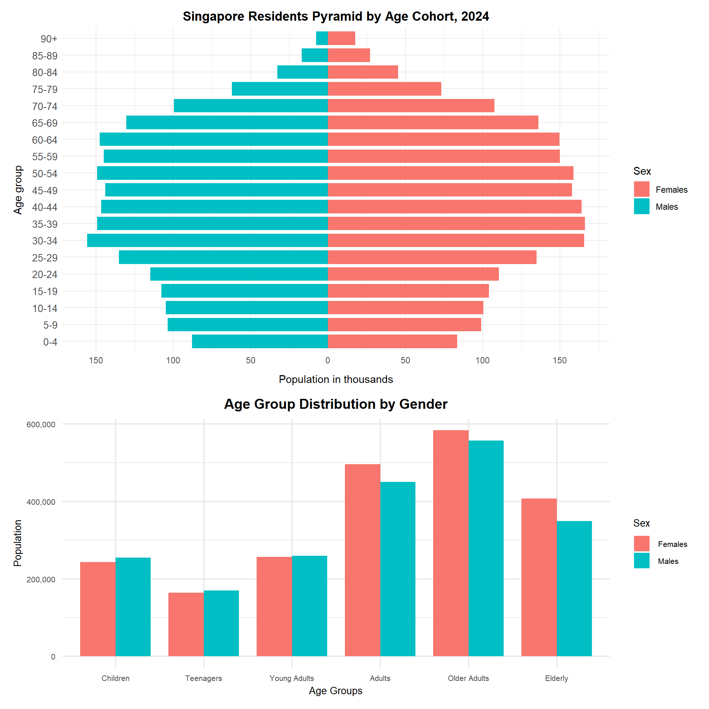

Code
pacman::p_load(ggrepel, patchwork,
ggthemes, hrbrthemes,
tidyverse, ggiraph, plotly,
patchwork, DT, dplyr, scales, forcats, dplyr, grid) We are tasked with the below instructions for ‘Take-Home_Ex01_Part2’:
Phase 2: Selecting one submission provided by your classmate, critic three good design principles and three areas for further improvement. With reference to the comment, prepare the makeover version of the data visualisation.
During lecture, an article published by Ben Jones was shared as a framework to judge data visualisation plots. I will be using this as a baseline to praise or critic the plots.
 The Four Quadrants:
The Four Quadrants:
I will be using the following few classmate’s submission (See the link) for this activity. His data cleaning will be replicated in the initial steps to get the original plot.
Libraries:
pacman::p_load(ggrepel, patchwork,
ggthemes, hrbrthemes,
tidyverse, ggiraph, plotly,
patchwork, DT, dplyr, scales, forcats, dplyr, grid) Dataset:
df <- read_csv("data/respopagesex2024.csv")Theme
common_theme <- theme_minimal(base_size = 16) +
theme(
axis.text = element_text(size = 18),
axis.title = element_text(size = 20),
plot.title = element_text(size = 18, face = "bold"),
legend.text = element_text(size = 17),
legend.title = element_text(size = 16)
)Creating a Numeric Age Column & Age Grouping
df <- df %>%
mutate(
AgeNum = suppressWarnings(
ifelse(Age == "90_and_Over", 90, as.numeric(Age))
)
)
df <- df %>%
mutate(
AgeGroup = case_when(
AgeNum <= 12 ~ "Child",
AgeNum <= 24 ~ "Youth",
AgeNum <= 64 ~ "Adult",
TRUE ~ "Senior"
)
)str(df)tibble [60,424 × 8] (S3: tbl_df/tbl/data.frame)
$ PA : chr [1:60424] "Ang Mo Kio" "Ang Mo Kio" "Ang Mo Kio" "Ang Mo Kio" ...
$ SZ : chr [1:60424] "Ang Mo Kio Town Centre" "Ang Mo Kio Town Centre" "Ang Mo Kio Town Centre" "Ang Mo Kio Town Centre" ...
$ Age : chr [1:60424] "0" "0" "1" "1" ...
$ Sex : chr [1:60424] "Males" "Females" "Males" "Females" ...
$ Pop : num [1:60424] 10 10 10 10 10 10 10 10 30 10 ...
$ Time : num [1:60424] 2024 2024 2024 2024 2024 ...
$ AgeNum : num [1:60424] 0 0 1 1 2 2 3 3 4 4 ...
$ AgeGroup: chr [1:60424] "Child" "Child" "Child" "Child" ...Below is the original plot (Plot 3) from the chosen classmate’s link.
df_pyramid <- df %>%
filter(AgeNum <= 90) %>%
mutate(Pop = ifelse(Sex == "Males", -Pop, Pop))
p6 <- ggplot(df_pyramid, aes(x = AgeNum, y = Pop, fill = Sex)) +
geom_col(width = 1) +
coord_flip() +
labs(title = "Population Pyramid", x = "Age", y = "Population") +
scale_y_continuous(labels = label_comma()) +
common_theme
p7 <- df %>%
group_by(Sex, AgeGroup) %>%
summarise(Pop = sum(Pop)) %>%
ggplot(aes(x = AgeGroup, y = Pop, fill = Sex)) +
geom_bar(stat = "identity", position = "dodge") +
labs(title = "Age Group Distribution by Gender", y = "Population") +
scale_y_continuous(labels = label_comma()) +
common_theme
(p6 / p7) + plot_layout(heights = c(1.3, 1))
Good Design Principles
The gridlines for both the 1) Pyramid plot and 2) Bar charts help with the mapping to both axis.
The colour coding of males and females were consistent and distinguishable.
The bar chart helps to describe the total population of each ‘Age groups’ where majority of the population are ‘Adults’.
Areas of Improvements
The x-axis of the pyramid plot has a negative number for the population and the scaling is too large to identify the population number of each age. This requires changing the x-axis to only positive values and changing the scale.
The bars in the pyramid plot is too clustered to distinguish the age groups clearly as each age value is represented. Secondly, the Y-axis scale does not clearly identify all the age groups for the population comparison. This can tidied by grouping the ages into ranges for better representation and also reduce the amount of the bars on the pyramid plot
The Age Groups for the bar chart plot might be too bias for the ‘Adult’ group as its range is between 25 - 65 years old where majority of the population falls under. It will better to have more than 4 main groupings to increase the representation accuracy of population. This can be adjusted by splitting the ‘Adult’ groups into ‘Young Adults’, ‘Middle-Aged Adults’ etc. This will spread the age range as equal as possible with addition legends on the plot to describe the ranges
The Age column is not entirely numeric due to texual vaues “90_and_Over”. I will directy address this by creating a new column called AgeNum2 and recode to “90” using string replacement. This will make the binning of new age ranges for the edited pyramid plot easier.
Binning into ranges:
I will bin the ages into incremental ranges of 5 using AgeNum column into ‘AgeNum2’.
age_breaks <- seq(0, 90, by = 5)
age_labels <- c(paste(seq(0, 80, 5), seq(4, 84, 5), sep = "-"), "85-89", "90+")
df <- df %>%
mutate(
AgeNum = ifelse(AgeNum == "90+", 90, AgeNum),
AgeNum = as.numeric(AgeNum),
AgeNum2 = cut(
AgeNum,
breaks = c(seq(0, 90, 5), Inf),
labels = age_labels,
right = FALSE
)
)Adding Another column ‘AgeGroup2’ by editing the Age ranges
df <- df %>%
mutate(
AgeGroup2 = case_when(
AgeNum <= 12 ~ "Children",
AgeNum <= 20 ~ "Teenagers",
AgeNum <= 30 ~ "Young Adults",
AgeNum <= 45 ~ "Adults",
AgeNum <= 64 ~ "Older Adults",
TRUE ~ "Elderly"
)
)df_pyramid <- df %>%
mutate(Pop = ifelse(Sex == "Males", -Pop, Pop))
p6 <- ggplot(df_pyramid, aes(x = AgeNum2, y = Pop, fill = Sex)) +
geom_bar(stat = "identity", width = 0.8) +
coord_flip() +
scale_y_continuous(
breaks = seq(-150000, 150000, 50000),
labels = abs(seq(-150, 150, 50))
) +
labs(
title = "Singapore Residents Pyramid by Age Cohort, 2024",
x = "Age group",
y = "Population in thousands"
) +
theme_minimal() +
theme(
plot.title = element_text(hjust = 0.5, face = "bold"),
axis.text.y = element_text(size = 10),
axis.title.x = element_text(margin = margin(t = 10))
)
p7 <- df %>%
group_by(Sex, AgeGroup2) %>%
summarise(Pop = sum(Pop)) %>%
ggplot(aes(x = AgeGroup2, y = Pop, fill = Sex)) +
geom_bar(stat = "identity", position = "dodge", width = 0.8) +
scale_x_discrete(limits = c(
"Children","Teenagers","Young Adults","Adults","Older Adults","Elderly"
)) +
labs(title = "Age Group Distribution by Gender", y = "Population", x = "Age Groups") +
scale_y_continuous(labels = label_comma()) +
common_theme +
theme(
plot.title = element_text(size = 14, hjust = 0.5, face = "bold"),
axis.title.x = element_text(size = 10, margin = margin(t = 4)),
axis.title.y = element_text(size = 10),
axis.text.y = element_text(size = 8),
axis.text.x = element_text(size = 8),
legend.title = element_text(size = 10),
legend.text = element_text(size = 8)
)
(p6 / p7) + plot_layout(heights = c(1.3, 1))